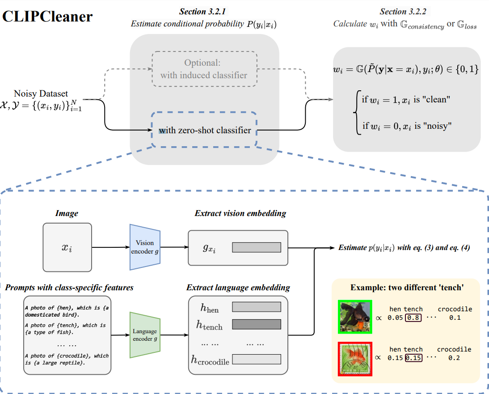
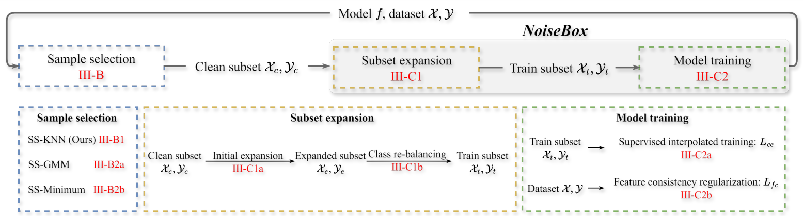

|
Zhonglin Sun （孙中林） I'm a final year PhD Student at Queen Mary University of London in UK, supervised by Dr. Georgios (Yorgos) Tzimiropoulos and Prof. Ioannis Patras. prior to that, I am honoured to receive my bachelor's and master's degree from East China Normal University under the supervision of Dr. Li Sun. |
{kind=link}
News |
|
| 2024.7 | Our paper CemiFace: Center-based Semi-hard Synthetic Face Generation for Face Recognition is accepted to NeurIPS 2024! |
| 2024.7 | Our paper LAFS: Landmark-based Facial Self-supervised Learning for Face Recognition is accepted to NeurIPS 2024! |
ResearchI'm interested in human-centered AI and data-effeicent learning, with a specific focus on the application to face-related topics, including Face Generation, Synthetic Dataset Generation, Face Recognition, Face Reaction I'm happy to discuss any related topics and possible collaborations, please simply drop me an email! |
|

|
CemiFace: Center-based Semi-hard Synthetic Face Generation for Face Recognition
Zhonglin Sun, Siyang Song, Ioannis Patras, Georgios Tzimiropoulos NeurIPS, 2024 code / paper |
|

|
LAFS: Landmark-based Facial Self-supervised Learning for Face Recognition
Zhonglin Sun, Feng Chen, Ioannis Patras, Georgios Tzimiropoulos CVPR, 2024 code paper |

|
Part-based face recognition with vision transformers
Zhonglin Sun, Georgios Tzimiropoulos BMVC, 2022 code / paper |
Academic serviceConferences: NeurIPS 2024, ICLR 2025 |